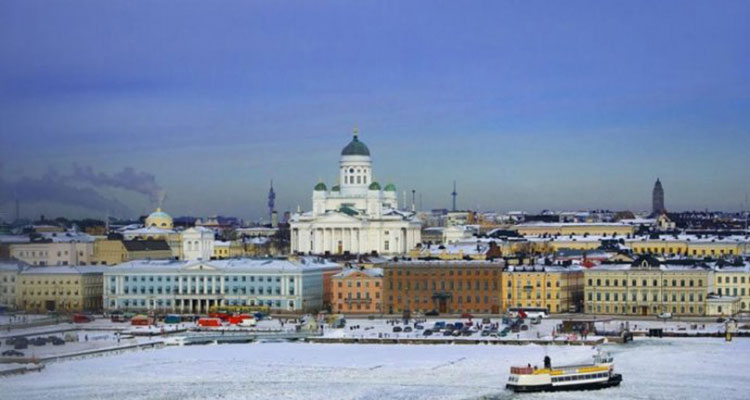
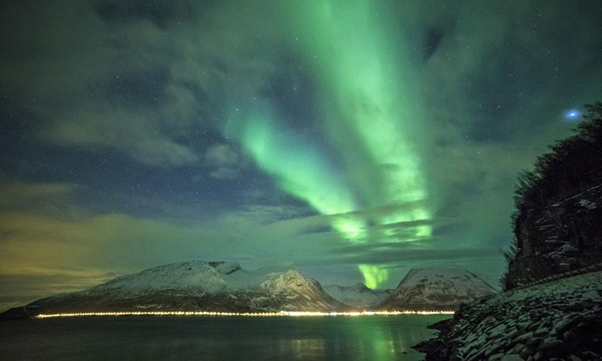
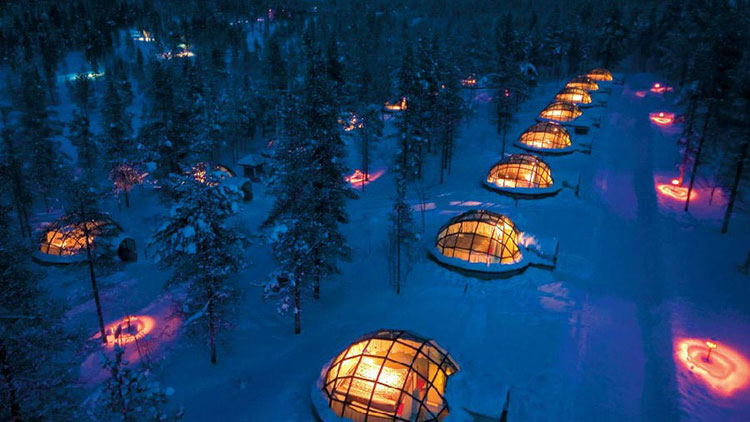
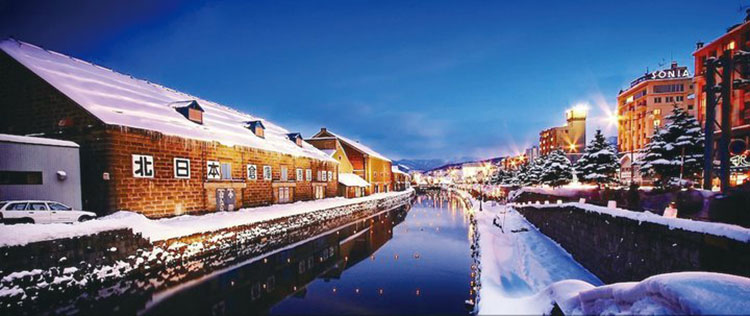
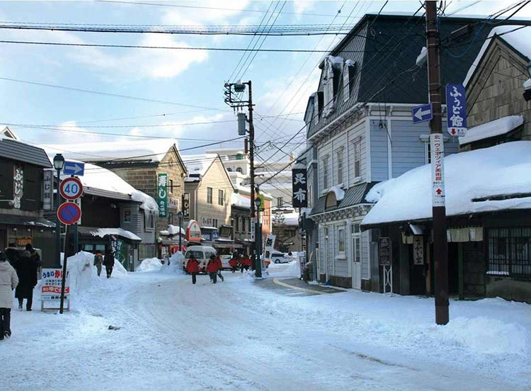
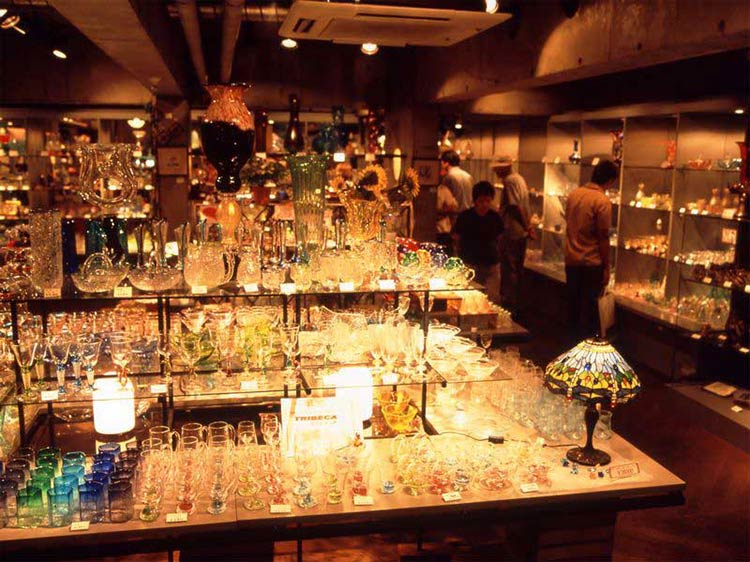
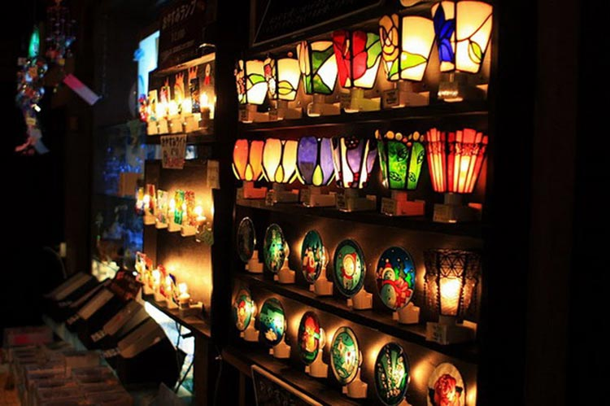
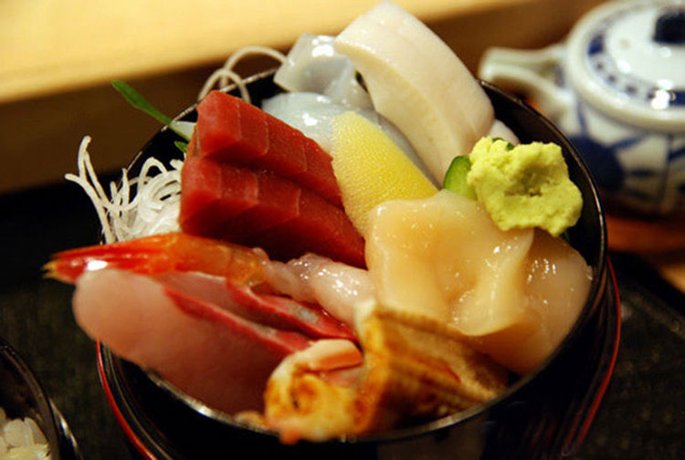
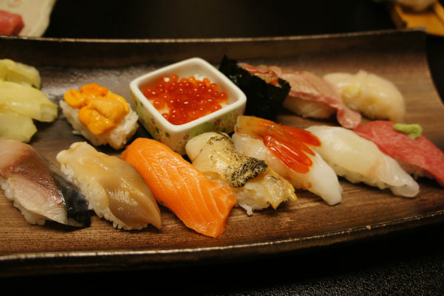

寒冷又漫长的冬季，要在何处安放我们悸动的心？又要在何处挥洒你我青春的汗水？身未动，心已远。就来一场说走就走的旅行吧！管他是大雪纷飞，还是冰冻三尺，只要有颗年轻的心，哪里都是莺飞草长的暮春三月。
芬兰位于欧洲北部，与瑞典、挪威、俄罗斯接壤，南临芬兰湾，西濒波的尼亚湾。有岛屿约17.9万个，湖泊约18.8万个，有“千湖之国”之美称。芬兰的冬季漫长而且寒冷，北部降雪期由十月一直持续到次年五月中旬，最低温度可达零下50度左右。但由于气候干燥，寒冷并不难以忍受，所以芬兰一直受到冬季运动爱好者的喜爱。
在芬兰北部的北拉普兰十二月和一月会出现极夜，每天的日照时间都非常短，即使是在正午时分太阳也只会在地平线上冒个头。但也正因如此长的黑夜，赋予了芬兰更多的神秘之美，极光就是大自然最为宝贵的馈赠。极光只会出现在在加拿大北部、阿拉斯加、北欧等高纬度地区，所以，冬天来到芬兰观赏极光，绝对是一生中最难忘的经历之一。
Kakslauttanen酒店——传说中的玻璃穹顶屋酒店，就位于拉普兰北端的萨利色尔卡。在大雪的包围下，躺在暖暖的屋子里，喝上一杯暖心的咖啡，并静静的欣赏着世间难有的美景，夫复何求。
记得岩井俊二的电影《情书》就取景于瑰丽的北海道小樽。电影中雪后的小樽，安静而清澈，有着让人感动的美景，如同初恋般恬淡和青涩。比起东京、大阪、札幌这些大城市，小樽的生活显得那么缓慢，在小樽街头散步，路过的晶莹剔透的硝子馆，鳞次栉比的商店、咖啡馆都有一种独特的日本式的欧式风情，仿佛瞬间穿越到了昭和时代的日本，浪漫而悠久。
小樽是日本北海道西南部港市，札幌的外港。湾内港阔水深，为天然良港，也是北海道西海岸经济中心之一。小樽是个非常浪漫的城市。冬，是小樽最美好的季节。伴着冬日暖阳，与爱的人漫步在如画般的运河边，河岸上满是未化完的雪，走累了，就进到温暖的咖啡馆喝杯咖啡，看着咖啡在晶莹的玻璃杯中舞蹈、升起阵阵白烟。这时可能突然下起了雪，雪花如同棉絮一般纷繁落下，如同于童话中的美好，你就在其中。
小樽的“特产”是硝子和八音盒。来到小樽最不可错过的莫过于八音盒馆与各色硝子馆。硝子，简单来说就是玻璃工艺品。在哨子馆中，最出名的莫过于「北一硝子馆」和「大正硝子馆」，这两家在小樽有很多家分店，每家分店的情调可能不一，但其中的情怀却是异曲同工。
 除了美景，小樽的美食也是不可错过的。因为小樽是海港城市，故海产品种类非常丰富且相当新鲜，用新鲜海鲜制作而成的寿司就变得异常美味。而且，这里的寿司季节性非常强，每个季节都会用符合时节的鱼类做成鱼生或寿司。
 1、芬兰不仅适合观赏极光，也是个滑雪的好去处，Levi滑雪场是芬兰最著名也最专业的滑雪场所，但芬兰冬天气温很低，如要长期在室外活动，谨记要穿上防风保暖的外套哦；
2、在冬季，只要来到北海道都能享受到属于自己的绝美之旅，不仅可以滑雪更可以在冰天雪地中享受室外温泉的悠哉感受，温上一壶清酒，吃着精致的温泉料理，绝对是放松身心的绝佳选择。